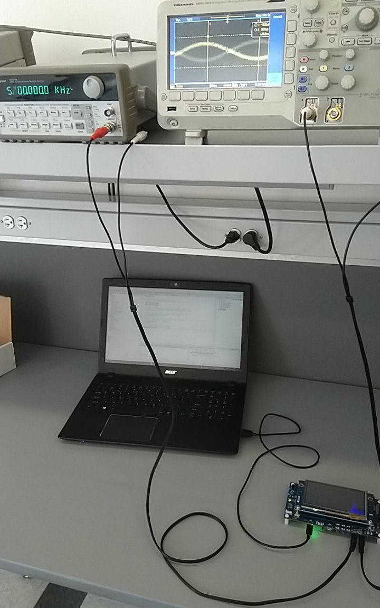

Laboratory Hardware Setup¶
To complete the lab assignmnets, the STM32H735G Discovery Kit will be connected to a signal generator and oscilloscope.
The hardware is available for short term checkout only. The checkout desk is located on the first floor of EERC. A student ID is required.
For lab one, you may complete the hardware component at any time the checkout desk is open.
Monday – Thursday 9:00am – 10:00pm
Friday 9:00am – 7:00pm
Saturday 10:00am – 6:00pm
Closed Labor Day, Monday Sept 6.
For the remaining labs, one member of each group should checkout the hardware at the start of your lab meeting time.
Hardware provided at checkout¶
STM32H735G Discovery Kit with attached micro USB cable.
2x 3.5mm TRS (stereo) to RCA (mono) breakout cables
2x RCA to BNC adapters (already attached to one channel.)
The provided cables allow you to connect the line in / line out (3.5mm TRS) on the discovery kit to the signal generator and oscilliscope which have BNC connectors.
One cable will be used to connect the green line in to the signal generator. The other cable will be used to connect the blue line out to the oscilloscope.
Although the line in / line out connectors on the board are stereo, we will only use one channel at a time for the lab assignments. This is why only one RCA on each breakout cable is attached with a BNC connector. You can leave the other RCA cable on the breakout disconnected since it is unused. To switch the connected channel, the BNC adaptor can be removed from the red RCA connector and reconnected to the white one (or vice versa).

Hardware available in lab room¶
The lab room (EER 1.810) has 12 stations, each with a signal generator (top) and an oscilloscope (bottom) shown below.

Connections for lab assignments¶
Connect the hardware using the following configuration:
Connect the discovery kit to you computer using the attached USB cable.
Attach one cable from signal generator output to the blue line in on the discovery board.
Attach the second cable from the oscilloscope input to the green line out on the discovery board.
